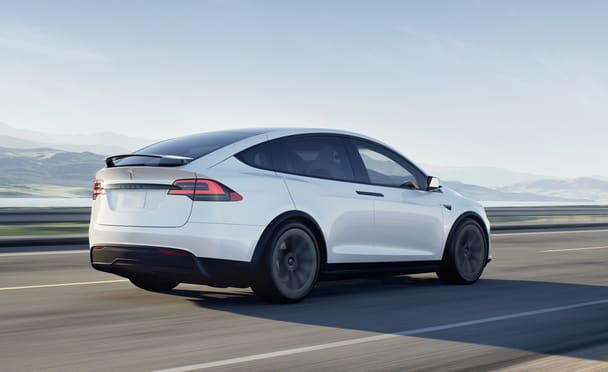
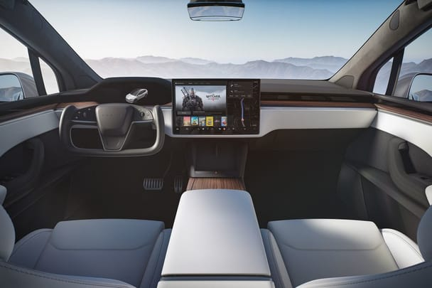

- Overview
- What's New for 2022?
- EV Motor, Power, and Performance
- Range, Charging, and Battery Life
- Fuel Economy and Real-World MPGe
- Interior, Comfort, and Cargo
- Infotainment and Connectivity
- Safety and Driver-Assistance Features
- Warranty and Maintenance Coverage
Overview
The 2022 Tesla Model X is a prime example of the EV automakers' brand ethos. Quick, high-tech, and featuring a flashy gimmick in its Falcon-wing rear doors, it presents a unique-but-expensive proposition in the growing EV-crossover segment. The Model X comes standard with two electric motors making a total of 670 horsepower and all-wheel drive; a three-motor version called Plaid makes an astounding 1020 horsepower and is said to shoot to 60 mph in just 2.5 seconds. That mega-motor version will be available in late 2022 according to Tesla. The Model X isn't as agile as the mechanically similar Model S sedan, but it's surprisingly agile given its size and weight. The cabin is an exercise in modernism, with a giant screen dominating the dashboard providing touch-sensitive access to most of the Model X's features. A third row of seats provides room for the whole family, and the second row can be ordered with captain's chairs.
What's New for 2022?
Last year's Long Range model is now called simply Model X and its estimated range falls from 363 miles per charge to 351. The high-performance Plaid trim, which was introduced last year, also has a revised driving range estimation, which is now 335 miles per charge versus 340. The awkward yoke-style (rectangular) steering wheel introduced last year carries over. The Plaid model with its three electric motors is sure to deliver brutal acceleration, but it's mighty expensive. And its 335-mile estimated driving range isn't as long as the less expensive base model, so we'd save the cash. The base Model X offers up to 351 miles of estimated driving range and still feels mighty quick thanks to the immediacy of the electric motors' power delivery.
EV Motor, Power, and Performance
The base Model X comes standard with two electric motors—one at the front axle and one at the rear—which enables all-wheel-drive capability. This setup is plenty swift and Tesla claims a zero-to-60-mph time of 3.8 seconds. The 1020-hp three-motor Plaid high-performance variant is boasts a claimed zero-to-60-mph time of 2.5 seconds, but we haven't verified its acceleration times at our test track yet. When we tested the Model S Plaid—the Model X's sedan platform- mate—it managed a viscera-compressing 2.1-second zero-to-60-mph time. Handling is respectable, but the Model X's party trick is the strong acceleration generated by its electric motors.
Range, Charging, and Battery Life
The Model X comes standard with a battery large enough to cover a claimed 351-mile driving range; upgrading to the faster Plaid model drops the estimated driving range to 335 miles. Recharging is quick via one of Tesla's Superchargers, which are located across the country. Charging at home via a 240V or 120V connection will be slower, but probably more convenient for owners, so Tesla offers in-home charging equipment for purchase.
Fuel Economy and Real-World MPGe
Among other similarly-sized all-electric SUVs, the Model X boasts the highest MPGe ratings from the EPA. Long Range models earned ratings of 109 city, 101 highway, and 105 MPGe combined. Even the Plaid model, which sacrifices some efficiency for faster acceleration, outperforms key rivals such as the Jaguar I-Pace and Audi e-Tron SUVs in this metric. For more information about the Model X's fuel economy, visit the EPA's website.
Interior, Comfort, and Cargo
A stark and nearly buttonless interior design is classic Tesla. The driver faces a digital gauge display and a unique yoke-style steering controller, which is often frustrating to use and difficult to get used to. Also unique is the Model X's windshield/glass roof that runs seamlessly from the base of the hood and up-and-over the front-seat passengers for a nearly uninterrupted view of what's ahead and what's above. Despite these whiz-bang features, the Model X's cabin leaves us wanting, especially considering its price can easily break the six-figure barrier, with non-descript air vents, misaligned panels, and flat-backed seats that don't offer enough adjustments.
Infotainment and Connectivity
A huge touchscreen infotainment system dominates the dashboard and controls nearly all of the Model X's various features and settings. A secondary digital readout directly in front of the driver serves as the gauge cluster. Tesla's infotainment system is certainly high-tech, but what you won't find is Apple CarPlay or Android Auto capability. Rear-seat riders are treated to their own small display which provides entertainment and, presumably, some control over the car's features.
Safety and Driver-Assistance Features
Most buyers are looking more for tech features than luxury, though, and the Model X can be optioned with the feature that is possibly the most buzzworthy: Autopilot. Tesla's semi-autonomous driving mode uses several cameras, multiple sensors, and radars to detect objects, people, and other vehicles and uses them to pilot the Model X under its own power. The Model X also offers a Summon feature that allows the user to park or retrieve the SUV from tight spots while standing outside—a feature that seems gimmicky but proved necessary thanks to the silly top-hinged doors. For more information about the Model X's crash-test results, visit the National Highway Traffic Safety Administration (NHTSA) and Insurance Institute for Highway Safety (IIHS) websites. Key safety features include:
- Standard automated emergency braking
- Standard lane-departure warning
- Available adaptive cruise control with semi-autonomous driving mode
Warranty and Maintenance Coverage
Tesla offers a comprehensive warranty package to protect the Model X's powertrain and hybrid components but lacks the lengthy bumper-to-bumper coverage and complimentary scheduled maintenance packages of the I-Pace.
- Limited warranty covers 4 years or 50,000 miles
- Powertrain warranty covers 8 years, regardless of miles
- No complimentary scheduled maintenance